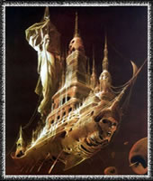
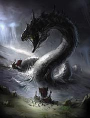
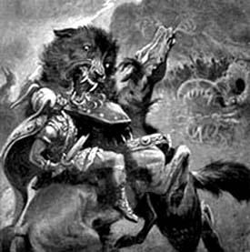
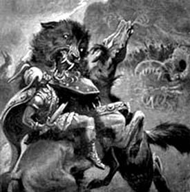

Минало много време, откакто коварния бог на огъня Локи, бил прикован към скалата. Скръбта на азите след
гибелта на прекрасния Балдер, започнала вече да стихва. По това време се родил вторият син на Тор,
наречен Моди, който не отстъпвал по сила на брат си Магни, а победените от Тор великани вече били
забравили пътя към Асгард и хората се разпръснали по цялата земя, заселвайки най-отдалечените кътчета на
Митгард. И тогава се появила пророчица, която виждала бъдещето така, както хората виждат това, което
се случва около тях. Славата й се разнесла по целия свят, достигайки даже до Асгард. Щом чул за нея,
великият Один я повикал, за да предскаже на него и децата му по-нататъшната им съдба. Веднага щом
дошла, прпрочицата започнала да говори: "Виждам, как още много столетия азите ще управляват,
както преди света. Виждам, как ще се увеличават богатствата и славата им. Виждам, как ще ги
почитат хората и как ще се боят великаните от тях. Но също така виждам, как се събират черни
облаци над главите им и как приближава залезът на боговете. Тогава ще настъпят три зими с небивали
студове и ветрове, които ще продължат три години, но хората няма да им обърщат внимание, защото ще
воюват непрекъснато за злато, което е заслепило очите им и е помрачило разсъдъка им. В края на третата
зима ще паднат оковите, с които е окован бога на огъня и той ще се надигне изпълнен със злоба и желание
за мъст. От земните недра ще се изтръгне могъщият вълк Фенрир, а от морските дълбини ще се надигне
Митгардската змия. Виждам, как Локи събира всички великани от Нифелхейм и Йотунхейм и как идва с тях към
Митгард на кораба "Нагалфар". Всред тях е Сурт - могъщият повелител на Муспелхейм. Той държи в ръката си
огнен меч. Голям, много голям е корабът "Нагалфар". Той е
направен от ноктите на всички умрели и с него
идва несметна войска. Виждам смелият страж Хеймдал, който вече тръби със своя рог Гялар. Виждам, че са се
разтворили всичките петстотин и четиридесет врати на Валхала и през всяка от тях излизат по осемстотин
смели войни. Пред всички, на своя Слейпнир, с копието Гунгнир в ръка и златен шлем на главата, препуска
Один. Останалите ази се спускат, като лавина по моста-дъга Бифрост, за да посрещнат врага. Виждам, как
битката между боговете и вликаните, придружени от чудовища, започва в долината Вигрид. О, мъка за всички
вас - виждам как Фенрир разкъсва бащата на боговете и как славният Тор убива Митгардската змия, но поразен
от отровата й, сам пада мъртъв на земята. Виждам, как Локи се сражава с Хеймдал и как двамата се убиват
взаимно. Виждам как Гарм, кучето на Хел се хвърля върху  Тир и как загиват двамата. Вече е паднал прекрасният
Фрейр, поразен от огнения меч на Сурт, който веднага се хвърля към богините, сражавищи се рамо до рамо с мъжете си.
Виждам, как Видар - Мълчаливият Аз, настъпва челюстта на Фенрир, как забива меча си в гърлото му и убива чудовището.
Ето, Магни и Моди вдигат бойния чук на Тор и също встъпват в боя и виждам, как Сурт загива под ударите на Мьолнер.
И виждам, да - виждам, че великаните са победени, но огненият меч на повелителя на Муспелхейм е паднал върху
ясена Игдрасил и могъщото дърво е обгърнато от пламъци. Неговите корени, отдавна проядени от дракона Нидхог,
не могат да го крепят повече и той рухва. Заедно с него се руши небесният свод, а земята потъва в океана.
Ето, вълците Скол и Хати поглъщат слънцето и луната и... вече не виждам нищо." Пророчицата замлъкнала,
а боговете седяли замислени. Даже неукротимият Тор мълчал. Малко след това обаче, пророчицата заговорила отново:
"Радвайте се, богове! Виждам, как се разпръсва черният дим, а в небето засиява новото слънце.
То е по-ярко и по-красиво от предишното. Вече не съществуват Асгард, Митгард, Йотунхейм,
Нифелхейм и Муспелхейм. Няма я страната на гномите, няма я и страната на елфите. Виждам
само безкрайния океан. О, не! Високо-високо в небето, по-високо от Асгард, виждам мълчаливия
Видар, храбрия Вали, могъщите Магни и Моди - те са останали живи. Заедно с тях са Балдер и
Ход, които са успяли да се спасят от мрачното царство на Хел. В пояса на Магни е затъкнат
страшният чук на баща му. Оцелелите богове строят за себе си нова страна, а под тях, от
океана се появява отново земята. Тя, цялата е зелена и е покрита с девствени гори, обширни
поля, пасища, градини и ниви. Ето ги и хората. Те вече не мислят за богатства. Блясъкът на
златото не ги заслепява и вече не воюват. Те са щастливи." - били последните й думи.
"Кога ще бъде всичко това?" - запитал Один. "Не знам кога, но знам, че ще бъде!" - отвърнала тя.
 
